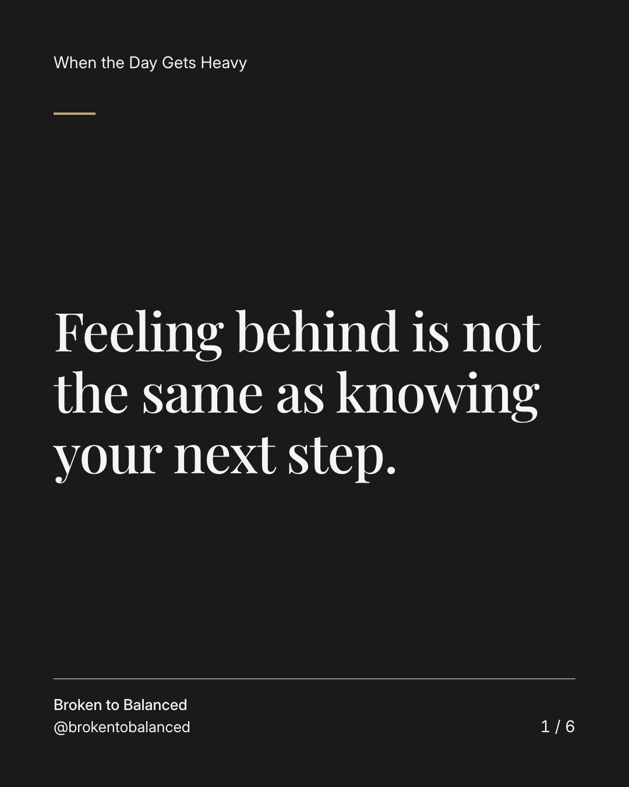
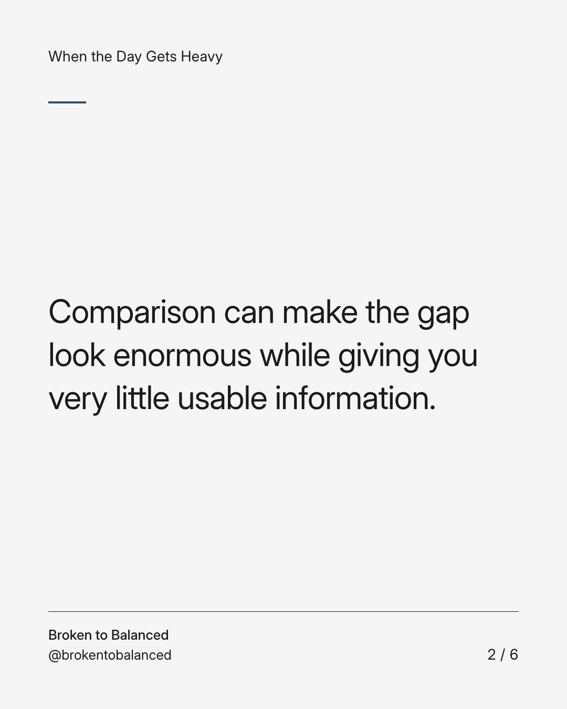
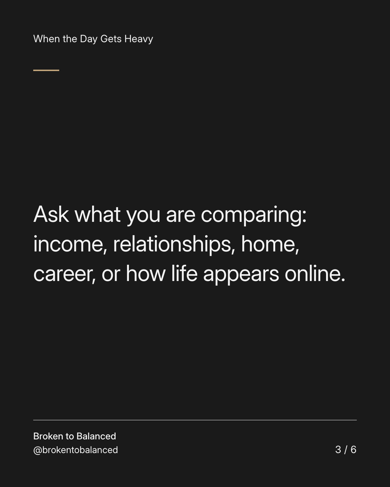
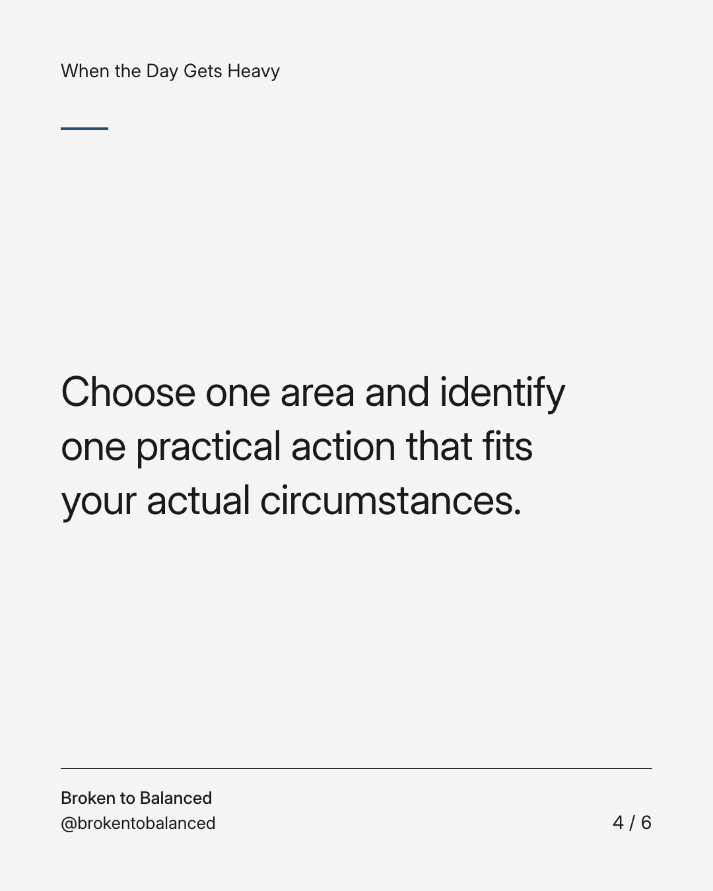
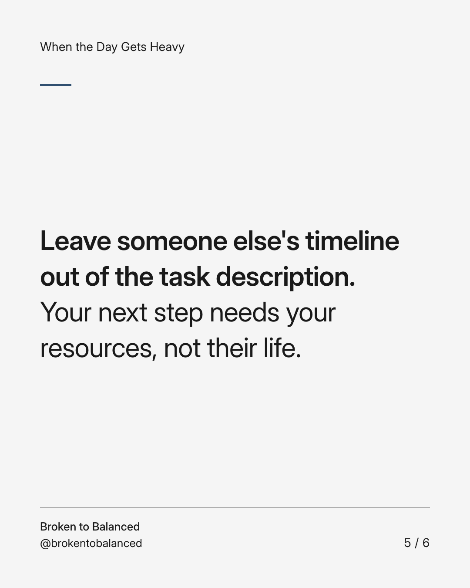
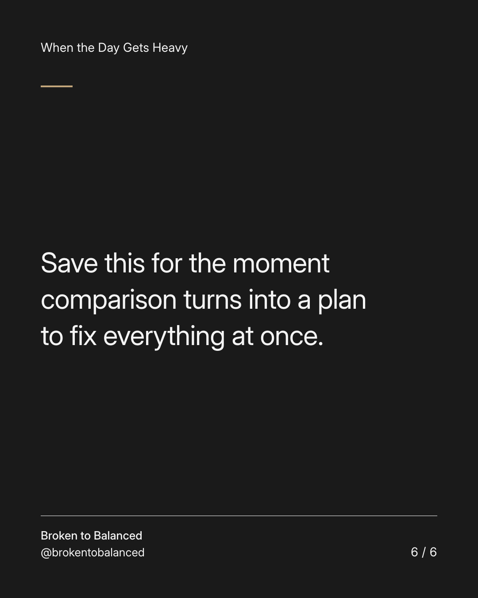

Exact text and accessibility text
Feeling behind is not the same as knowing your next step.
Slide 1 of 6. Feeling behind is not the same as knowing your next step.


Exact text and accessibility text
Comparison can make the gap look enormous while giving you very little usable information.
Slide 2 of 6. Comparison can make the gap look enormous while giving you very little usable information.


Exact text and accessibility text
Ask what you are comparing: income, relationships, home, career, or how life appears online.
Slide 3 of 6. Ask what you are comparing: income, relationships, home, career, or how life appears online.


Exact text and accessibility text
Choose one area and identify one practical action that fits your actual circumstances.
Slide 4 of 6. Choose one area and identify one practical action that fits your actual circumstances.


Exact text and accessibility text
Leave someone else's timeline out of the task description. Your next step needs your resources, not their life.
Slide 5 of 6. Leave someone else's timeline out of the task description. Your next step needs your resources, not their life.


Exact text and accessibility text
Save this for the moment comparison turns into a plan to fix everything at once.
Slide 6 of 6. Save this for the moment comparison turns into a plan to fix everything at once.
Exact caption
Plain-text fallback: select and copy the caption.